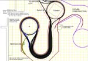
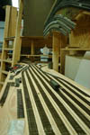
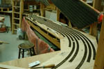
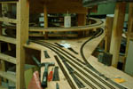
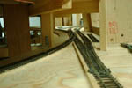
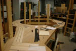
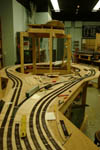
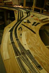
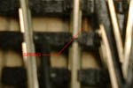

|
|

The staging yard is designed as a "folded dogbone" with loops at each end and the actual storage tracks in the middle. This gives a lot of operational flexibility as a train can enter from either end, reverse and leave again, or enter at one end and leave at the other, or park facing either way ready for departure. Ultimately we plan to have each storage track split into 2 blocks but initially we won't wire it that way.
Our old railroad was hampered by lack of staging. The main freight yard had to provide parking space for all our freight cars and thus was constantly clogged. We hope to keep most of our car fleet in staging, while only cars which actually have a destination on the visible part of the railroad will be out there at any given time.
Contrary to our tradition, the staging yard is being built with commercial switches (Peco) and flexible track (Micro Engineering). We think this is acceptable because the yard won't be considered "visible track".
The pictures are all thumbnails.
|  | This is the plan, drawn in CADRail, from which we're working. Some of the crossings of one route over another are misleading as they imply one track is higher, when it shouldn't be. And don't expect to follow individual tracks where they're close together; there isn't enough resolution here to do that. But you can see how the routes are laid out. |
|  | The new staging tracks. The left-hand five tracks are operational as part of block 16 when the entrance switch (sw48) is thrown. |
|  | End of track as of 2 August, 2000. Note old F-Yard stored off the floor! It has a lot of switches and we hope to reuse it. |
|  | This is the wye that gives access to staging from the Gifford City end. All tracks are accessible from the left side (via sw48) and 3 of them can also be reached via the right hand leg of the wye.This formation allows a train to enter from the far end (Berkmanville or Tuckerton), reverse round the tower loop, and depart the way it arrived. |
|  | This view looks down the main line from Gifford City. Switch 48, in the foreground, gives access to staging. Alternatively, a train can swing to the left and take the loop which will return it to Gifford without entering staging. We expect some changes in the configuration of switches here, though not to sw48. |
|  | 08-02-00 This is the return loop at the far end of staging. It will incorporate helical ramps up and down, connecting to Tuckerton, Berkmannville and the "main line". None of the ramps have been started yet but we expect a complex construction project to begin in the next few weeks. |
|  | 08-16-00 The distal end of staging, showing new tracks around the loop. Not every siding is in place but you can see the roadbed prepared for the next round of installation. |
|  |
08-16-00 The switches at the distal end of staging, showing the 3-way switch. Even in this view you can see that the leftward-diverging arm of the switch has a sharper curve than the rightward arm, and that to prevent a reverse-curve scenario (initial testing caused derailments) a short section of straight track was added beween the 3-way and its nearest neighbor. The order of tracks on the loop which begins in the foreground is (outer to inner) ramp down to Berkmannville, staging turnaround, ramp up to Tuckerton, ramp up to Sawyer (starts in Berkmannville but rotates oppositely to outer ramp). The Sawyer ramp is double track but the inner track exists only as a pencil line. |
|  |
08-16-00 This is a picture--sorry the quality is poor but the camera just didn't feel like focusing properly--of the first coupler knuckle spring to be discovered on the tracks of the staging yard. |
|
Tech Model Railroad Club of
MIT Room N52-118 265 Massachusetts Avenue Cambridge, MA 02139
|
+1 617 253-3269 Email: tmrc-web@mit.edu |
{kind=link}
{kind=link}
{kind=link}
{kind=link}
{kind=link}
{kind=link}
{kind=link}
{kind=link}
{kind=link}